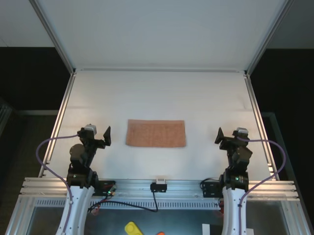
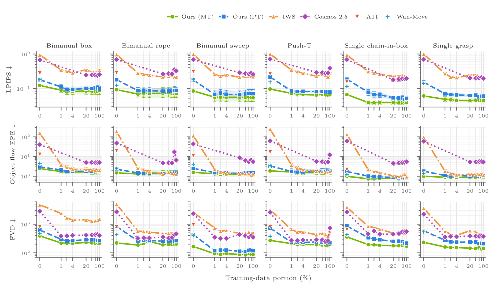
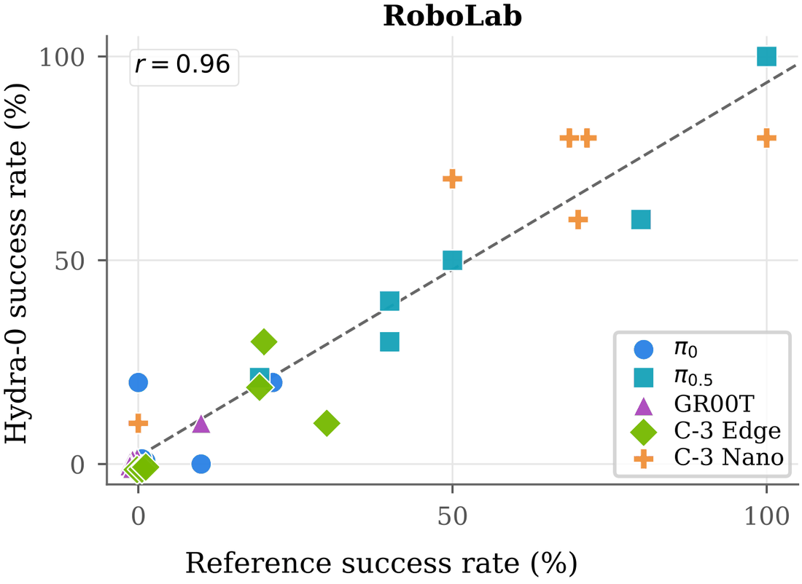

One representation, four embodiments: an egocentric human hand, a handheld gripper, a single arm and a bimanual robot. The lower row is the upper row plus the interface — the same window carrying the trajectories the model is conditioned on. What that interface then buys is the rest of this page: simulation, policy evaluation, and control.
We introduce Hydra-0, a generalist world model conditioned on action flow, which represents robot actions as pixel motion. This shared visual interface enables generalist world modeling and control by learning action consequences across embodiments, tasks, environments, and video-generation backbones. Our best configuration achieves 90.4% lower robot-motion error and 60.2% lower object-motion error than our action-conditioned baseline, while supporting zero-shot composition and data-efficient adaptation. On the RoboLab benchmark, Hydra-0 achieves a Pearson correlation of r = 0.96 between replayed and reference success rates.
Finally, we uncover an emergent inverse mode of this interface: a world action model that predicts compatible robot motion from desired object flow transferred from a human demonstration. A trained action head maps the resulting latent features to executable actions without requiring task-specific expert robot demonstrations. Together, these results demonstrate the potential of action flow as a shared control interface connecting heterogeneous training data, open-loop policy evaluation, and robot control.
One conditioning interface, built two ways: from video during training, from kinematics at deployment.
Action flow is a set of camera-plane trajectories describing the commanded motion of the visible embodiment: image positions with visibility flags, tracked over the prediction horizon. The same representation can describe a robot arm, a handheld gripper, or a human hand, without exposing any of their native action spaces to the video model.
Each pair is one five-second window played twice, frame-locked: on the right, the same window carrying the trajectories the model is conditioned on, drawn over a one-second rolling history. The row scrolls sideways. Tracks are annotated on both the embodiment and the manipulated object: a dense tracker recovers the trajectories from the video, and grounded masks split them. Nothing in this lane is projected from robot geometry — that is the deployment route below. The first frame plus this flow is the entire condition; the rest of the clip is the flow-matching target.

Visible robot-surface points are propagated by the commanded link transforms and projected through the calibrated camera; the model then predicts the command's consequence. The three clips are one seventeen-second closed-loop rollout on a single clock, so the arm pose in the simulator, the flow drawn on the observation and the generated frame all belong to the same instant.
When robot geometry and calibration are available, surface points visible in the first observation are propagated under the candidate command and projected into the camera plane. A point counts as visible only when it has positive camera depth, lies inside the image, and agrees with the rendered depth buffer within 1.2 cm over a 3×3 neighborhood, which is what rejects self-occluded points.
Most large interaction datasets ship neither robot description files nor calibration. There we recover dense image-plane trajectories with a flow tracker and segment them with grounded embodiment and object masks — the same representation, no privileged metadata.
Figure 2 · dense tracks are split by mask, then one conditioning mode is drawn per training step.
All seven panels are the same 81-frame window, played together. One conditioning mode is drawn per training step, from the pools the masks define: 1,819 embodiment tracks and 3,250 object tracks out of 14,997 the tracker returns.
Full five-second rollouts, one held-out dataset per row. Every panel in a row is the same evaluation sample at the same timestep, so a method reads down a column and a dataset reads across. Each row carries three held-out samples — step through them with the arrows beside the dataset name, and hover the counter to see the task the model was conditioned on.
The four panels of a row play as one clip: the page pins them to a shared clock and corrects them on the frame a loop wraps, so a difference on screen is a difference between methods rather than between players. Each baseline is resampled into that sample's ground-truth frame shape — Cosmos 2.5 renders every sample at 320×256, and Wan-Move at its own 720×544 to 832×464, against ground truths running 640×480 to 848×480 — so how much of a panel an object fills is not an artifact of who rendered larger.
All methods see the same 100 validation clips per dataset across five held-out sets.
Within the same Cosmos 2.5 backbone, swapping the native relative 6D action for action flow improves PSNR, SSIM, gripper EPE, FID and FVD on all five datasets, and object EPE on the four where it is measured — a controlled comparison that isolates the conditioning representation. VLM scores are the exception, and are mixed: the judge rates physical plausibility and temporal consistency rather than whether the generated motion follows the commanded trajectories, which flow EPE measures directly. The best configuration is the distilled four-step Wan2.2 A14B model, best in nearly every cell and also the fastest.
Gray rows are zero-shot baselines using released checkpoints; the best value per column is bold green. Standard errors are reported in the paper. Object EPE is omitted for DROID, where object grounding is unreliable in cluttered scenes.
A camera bolted to the arm produces global image motion that a fixed viewpoint never sees. Given depth and relative camera pose, camera egomotion converts into the same image-space condition, so one interface covers both camera and interaction motion. This is a single-rollout proof of concept, not a systematic evaluation.
One DROID wrist window: ground truth, our generation, and the conditioning flow it was given.
Six held-out Interactive World Simulator tasks, adapted with 0–100% of each task's training split.

The simulator is initialized from an episode's first observation and replays that episode's achieved trajectory as action flow.
Because the policy is never queried on generated observations, this measures whether the simulator preserves an outcome it is shown — not prospective evaluation of an unexecuted command. Generated rollouts are scored by a human rater applying the same task predicate, with policy identity withheld.
π₀, π₀.₅, GR00T N1.7, Cosmos-3 Nano, and Cosmos-3 Edge, rolled out 10 times per task.

Figure 4 · flexible-pipe bending, from the human demonstration through to the robot's execution.
Supply desired object flow instead of embodiment flow and the world model generates a compatible robot motion, from which a learned action readout produces executable 14-DoF commands. The object flow here is transferred from a held-out human demonstration, and the readout is trained on paired real-world rollouts of both successes and failures — no task-specific expert robot demonstration is required.
All four clips come from one flexible-pipe run.
The world action model can exhibit roughly 1 cm of grasp imprecision. We hypothesize that limited depth awareness contributes, but do not establish it as the cause. Grasp and contact state can also be ambiguous in generated rollouts, including whether an object has actually been secured. Conditioning on depth, tactile, or force signals is the obvious next step. The wrist-camera result is a qualitative DROID proof of concept; systematic evaluation under mobile manipulation and broader camera motion remains future work, as does closed-loop policy evaluation — everything reported here is open-loop.